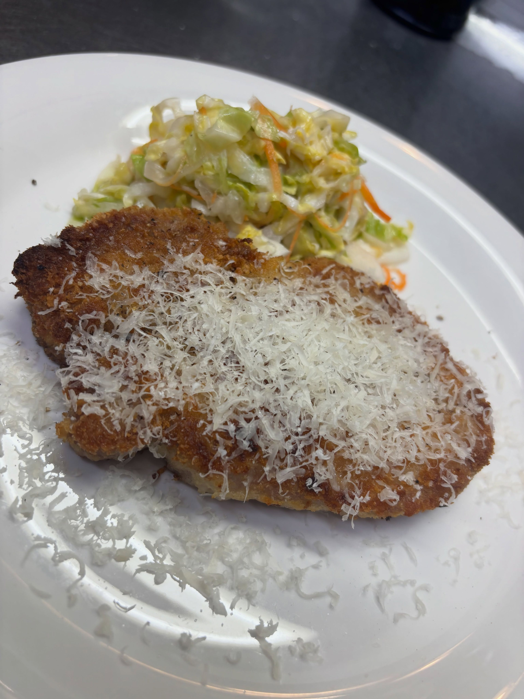
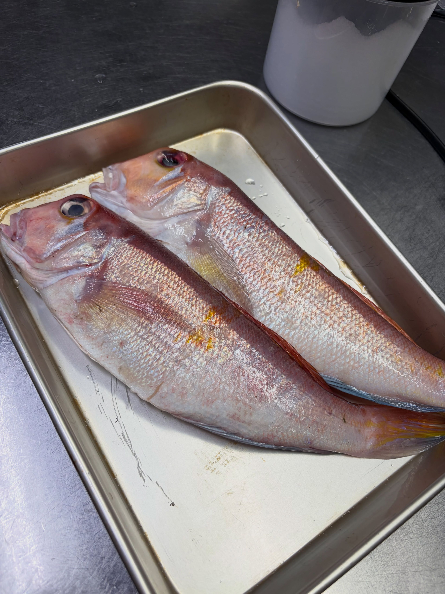

三元豚のカツレツ
揚げたてに、チーズをたっぷり削って。付け合わせのサラダと一緒に。
ITALIAN BAR — KAMIFUKUOKA
昼はパスタ、夜はワインと小皿。
上福岡駅西口すぐ、霞ヶ丘商店街のイタリアンバルです。
11:30–14:30／17:30–23:00｜水曜定休｜現金・各種カード可
ABOUT
上福岡駅西口のロータリーを渡ってすぐ、霞ヶ丘商店街の中にあります。2024年12月に開いた店で、昼はパスタやワンプレートのランチ、夜はワインと小皿の料理を出しています。
その日に入った魚を、カルパッチョや一皿の主役に仕立てます。仕入れは日によって変わり、新潟県佐渡産の甘鯛が届くこともあります。
厨房もホールも店主がひとりで回しています。クチコミには「一人でお店をされてますが、それでも提供も早く、優しい店主さんでした！」という声が寄せられていました。

昼も、夜も。駅を降りてすぐ。
SHOP INFO
| 店名 | イタリアンバル kentina（ケンティーナ） |
|---|---|
| 住所 | 埼玉県ふじみ野市霞ケ丘1-4-4 霞ヶ丘商店街 |
| アクセス | 東武東上線上福岡駅 西口すぐ |
| 営業時間 | 11:30–14:30／17:30–23:00 閉店の1時間前にお客さまがいない場合、早めに閉めることがあるそうです。営業日・時間は月ごとにInstagramのカレンダーで告知されています。ご来店前にご確認ください。 |
| 定休日 | 水曜 このほかに臨時休業の日があります。月ごとの営業カレンダーがInstagramで告知されています。 |
| お支払い | 現金・各種カード |
| 電話 | 049-257-5225 |
CONTACT
予約なしでもご来店いただけます。ご予約はお電話、または食べログのネット予約フォームから受け付けられています。